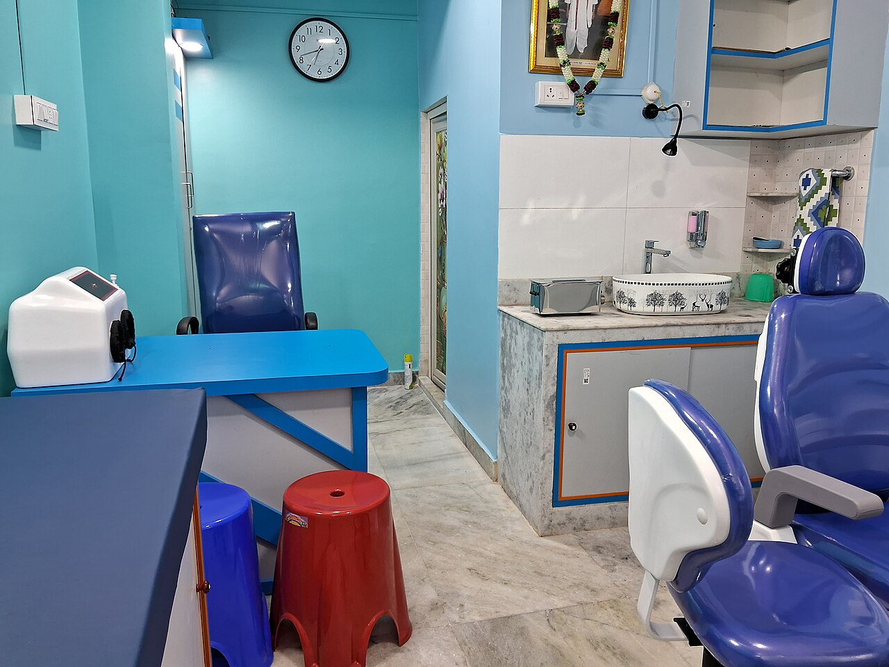

Quality dental treatment for Mortad residents at Hitech Dental Clinic, Nizamabad.

Mortad is a town in Nizamabad district with a close-knit community that values trusted healthcare providers. For dental needs, families from Mortad rely on Hitech Dental Clinic in Nizamabad for professional, caring treatment.
Whether it's a child's first dental visit, a parent's root canal, or a grandparent's denture fitting, we treat every member of the family with equal attention and expertise.
Mortad is about 40 km from Nizamabad. Regular bus connectivity makes it easy to visit our clinic for appointments.